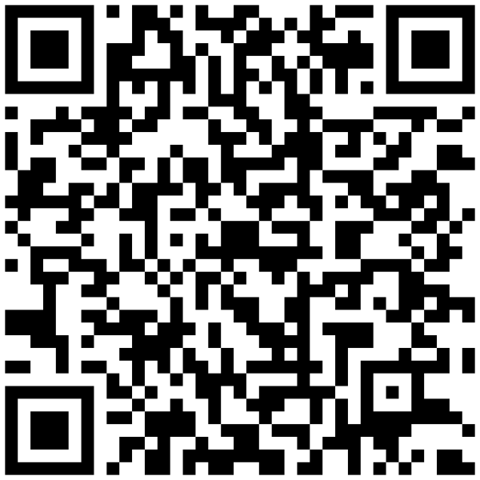

● Board Bored
Scan me
Print this, or hold your phone up to it. Both codes were decoded and confirmed
before printing — they go where they say they go.
How was tonight?
For anyone who came — visitors, vendors, shops. Ten seconds, works anonymously.

Tell us how it went →
seekerflame.github.io/board-bored-bakersfield/feedback.html
The code
The whole site is open. Fork it, run your own street, or send a fix.
Build on it →
github.com/seekerflame/board-bored-bakersfield
Printing: any size down to about 1 inch square scans fine — these are 37×37 and 33×33 modules
at error-correction level M, the same level as the existing print pack. Keep the white border; that
quiet zone is what lets a camera find the code at an angle.
Tracking who sent people: these two are generic. For per-vendor codes that credit whoever
handed them out, run python3 scripts/board_referral.py links --all and generate a code
from that vendor's URL instead.